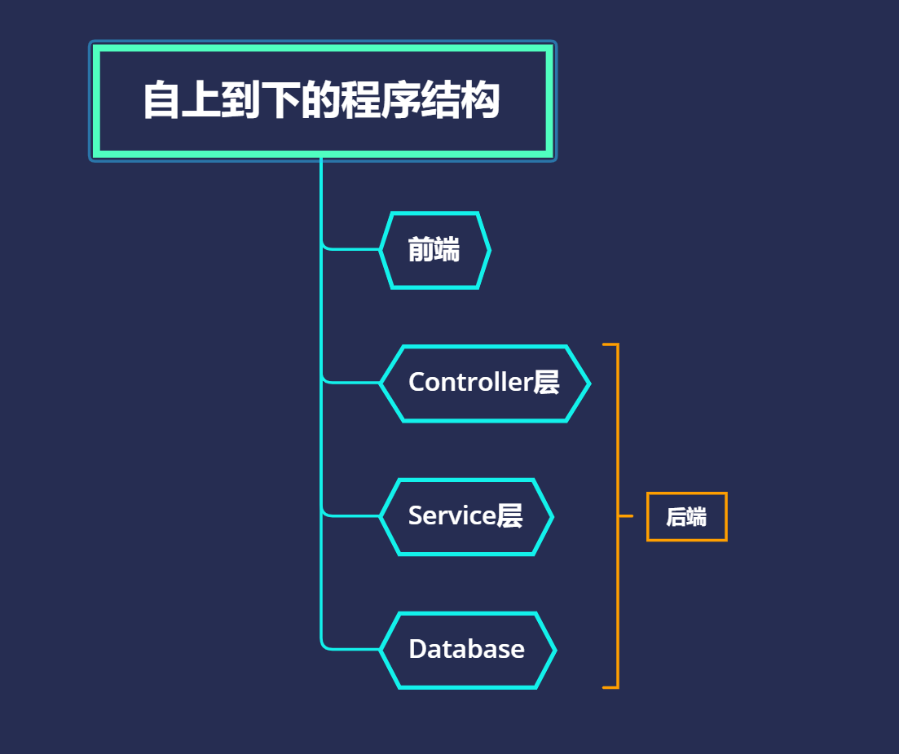
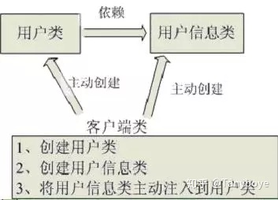
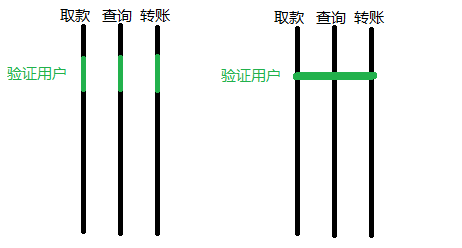
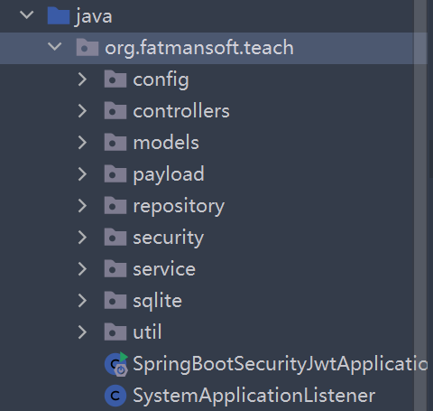
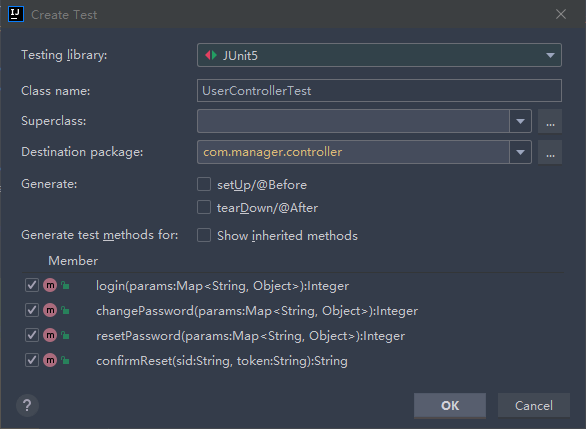
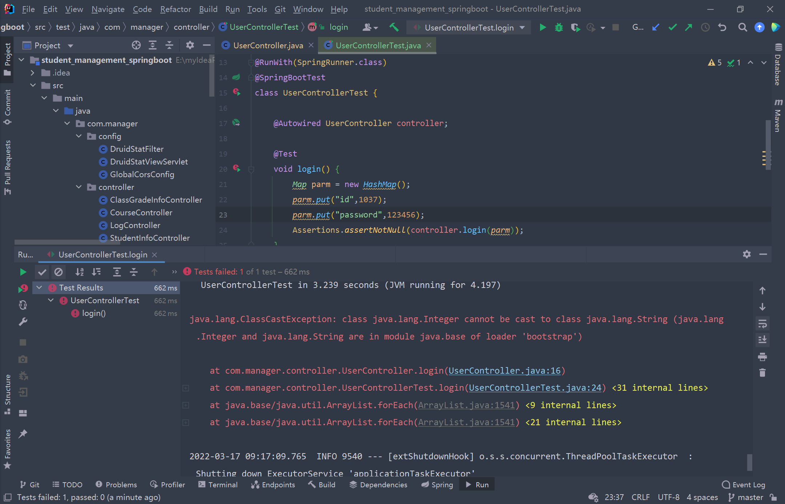

Springboot入门指南与junit单元测试
SpringBoot入门指南
基本结构认知
首先，你要对基本的结构有一定的认识：
除此之外，还有对象集合bean（或者entity、pojo），配置文件集合config，如果你使用MyBatis，你会用到映射集合mapper。
spring认知
https://www.bilibili.com/video/BV1WE411d7Dv?spm_id_from=333.999.0.0 可以考虑作为知识补充
其次，springBoot会涉及一些基本的spring原理，你至少需要对spring的这两方面有一定的认识：
IoC容器
传统的应用程序中，控制权在程序本身，程序的控制流程完全由开发者控制。但在IoC模式下，控制权发生了反转，即从应用程序转移到了IoC容器，组件不再由应用程序自己创建和配置，而是由IoC容器负责，这样，应用程序只需要直接使用已经创建好并且配置好的组件。为了能让组件在IoC容器中被 “装配” 出来，需要某种 “注入” 机制，例如，BookService自己并不会创建DataSource，而是等待外部通过setDataSource()方法来注入一个DataSource。
这种控制反转、依赖注入的思想会让你更快地理解SpringBoot的@Autowired或者@Resource
IOC简介
IoC是什么
Ioc—Inversion of Control，即“控制反转”，不是什么技术，而是一种设计思想。在Java开发中，Ioc意味着将你设计好的对象交给容器控制，而不是传统的在你的对象内部直接控制。如何理解好Ioc呢？理解好Ioc的关键是要明确 “谁控制谁，控制什么，为何是反转（有反转就应该有正转了），哪些方面反转了”，那我们来深入分析一下：
●谁控制谁，控制什么：传统Java SE程序设计，我们直接在对象内部通过new进行创建对象，是程序主动去创建依赖对象；而IoC是有专门一个容器来创建这些对象，即由Ioc容器来控制对象的创建；谁控制谁？当然是IoC 容器控制了对象；控制什么？那就是主要控制了外部资源获取（不只是对象包括比如文件等）。
●为何是反转，哪些方面反转了：有反转就有正转，传统应用程序是由我们自己在对象中主动控制去直接获取依赖对象，也就是正转；而反转则是由容器来帮忙创建及注入依赖对象；为何是反转？因为由容器帮我们查找及注入依赖对象，对象只是被动的接受依赖对象，所以是反转；哪些方面反转了？依赖对象的获取被反转了。
用图例说明一下，传统程序设计如图，都是主动去创建相关对象然后再组合起来：
当有了IoC/DI的容器后，在客户端类中不再主动去创建这些对象了，如图所示:
IoC能做什么
IoC不是一种技术，只是一种思想，一个重要的面向对象编程的法则，它能指导我们如何设计出松耦合、更优良的程序。传统应用程序都是由我们在类内部主动创建依赖对象，从而导致类与类之间高耦合，难于测试；有了IoC容器后，把创建和查找依赖对象的控制权交给了容器，由容器进行注入组合对象，所以对象与对象之间是松散耦合，这样也方便测试，利于功能复用，更重要的是使得程序的整个体系结构变得非常灵活。
其实IoC对编程带来的最大改变不是从代码上，而是从思想上，发生了 “主从换位” 的变化。应用程序原本是老大，要获取什么资源都是主动出击，但是在IoC/DI思想中，应用程序就变成被动的了，被动的等待IoC容器来创建并注入它所需要的资源了。
IoC很好的体现了面向对象设计法则之一—— 好莱坞法则：“别找我们，我们找你”；即由IoC容器帮对象找相应的依赖对象并注入，而不是由对象主动去找。
IoC和DI
DI—Dependency Injection，即 “依赖注入” ：是组件之间依赖关系由容器在运行期决定，形象的说，即由容器动态的将某个依赖关系注入到组件之中。依赖注入的目的并非为软件系统带来更多功能，而是为了提升组件重用的频率，并为系统搭建一个灵活、可扩展的平台。通过依赖注入机制，我们只需要通过简单的配置，而无需任何代码就可指定目标需要的资源，完成自身的业务逻辑，而不需要关心具体的资源来自何处，由谁实现。
理解DI的关键是：“谁依赖谁，为什么需要依赖，谁注入谁，注入了什么”，那我们来深入分析一下：
●谁依赖于谁：当然是某个容器管理对象依赖于IoC容器；“被注入对象的对象” 依赖于 “依赖对象”；
●为什么需要依赖：容器管理对象需要IoC容器来提供对象需要的外部资源；
●谁注入谁：很明显是IoC容器注入某个对象，也就是注入“依赖对象”；
●注入了什么：就是注入某个对象所需要的外部资源（包括对象、资源、常量数据）。
IoC和DI由什么关系呢？其实它们是同一个概念的不同角度描述，由于控制反转概念比较含糊（可能只是理解为容器控制对象这一个层面，很难让人想到谁来维护对象关系），所以2004年大师级人物Martin Fowler又给出了一个新的名字：“依赖注入”，相对IoC 而言，“依赖注入” 明确描述了 “被注入对象依赖IoC容器配置依赖对象”。
AOP
AOP是Aspect Oriented Programming，即面向切面编程。
那什么是AOP？
我们先回顾一下OOP：Object Oriented Programming，OOP作为面向对象编程的模式，获得了巨大的成功，OOP的主要功能是数据封装、继承和多态。
而AOP是一种新的编程方式，它和OOP不同，OOP把系统看作多个对象的交互，AOP把系统分解为不同的关注点，或者称之为切面（Aspect）。
AOP技术看上去比较神秘，但实际上，它本质就是一个动态代理，让我们把一些常用功能如权限检查、日志、事务等，从每个业务方法中剥离出来。
比如，银行有一些业务，但这些业务首先要验证用户身份，我们可能每个业务都要先写一份验证身份的代码，也就是说，每个业务流程都要验证身份，但有没有想过可以把这个验证用户的代码是提取出来，不放到主流程里去呢？
这就是AOP的作用了，有了AOP，你写代码时不要把这个验证用户步骤写进去，即完全不考虑验证用户，你写完之后，在另我一个地方，写好验证用户的代码，然后告诉Spring你要把这段代码加到哪几个地方，Spring就会帮你加过去，而不要你自己Copy过去，这里还是两个地方，如果你有多个控制流呢，这个写代码的方法可以大大减少你的时间。
你可以把它当块板子，这块板子插入一些控制流程，这块板子就可以当成是AOP中的一个切面。所以AOP的本质是在一系列纵向的控制流程中，把那些相同的子流程提取成一个横向的面，如图
不过AOP的目的不是这样，这只是一个“副作用”，真正目的是，你写代码的时候，事先只需考虑主流程，而不用考虑那些不重要的流程，举一个通用的例子，经常在debug的时候要打log吧，你也可以写好主要代码之后，把打log的代码写到另一个单独的地方，然后命令AOP把你的代码加过去，注意AOP不会把代码加到源文件里，但是它会正确的影响最终的机器代码。
springboot基本认知与常用注解
SpringBoot基于注解进行开发。
推荐MyBatis而不是JPA或者Hibernate。
结构相关
@Component
@Component注解用于标注一个普通的组件类，它没有明确的业务范围，只是通知Spring被此注解的类需要被纳入到Spring Bean容器中并进行管理。
@Controller
@Controller是@Component注解的一个延伸，Spring会自动扫描并配置被该注解标注的类。此注解用于标注Spring MVC的控制器。
@RestController
@RestController是在Spring 4.0开始引入的，这是一个特定的控制器注解。此注解相当于@Controller和@ResponseBody的快捷方式。当使用此注解时，不需要再在方法上使用@ResponseBody注解
@Service
@Service注解是@Component的一个延伸（特例），它用于标注业务逻辑类。与@Component注解一样，被此注解标注的类，会自动被Spring所管理。
@Repository
@Repository注解也是@Component注解的延伸，与@Component注解一样，被此注解标注的类会被Spring自动管理起来，@Repository注解用于标注DAO层的数据持久化类。
@Mapper
你可以使用此注解替代@Repository，区别在于：
@Mapper不需要配置扫描地址，通过xml里面的namespace里面的接口地址，生成了Bean后注入到Service层中。@Repository需要在Spring中配置扫描地址，然后生成Dao层的Bean才能被注入到Service层中：如下，在启动类中配置扫描地址：
1 | //添加启动类注解 |
或者，你不想写xml，可以这样，但不推荐：
1 | import com.zwn.learndemo.entity.User; |
因为xml是可以写动态sql的，参见：https://zwn2001.github.io/2021/11/06/web踩坑汇总/
请求相关
@ResponseBody
@ResponseBody会自动将控制器中方法的返回值写入到HTTP响应中。特别的，@ResponseBody注解只能用在被@Controller注解标记的类中。
@RequestBody
@RequestBody在处理请求方法的参数列表中使用，它可以将请求主体中的参数绑定（反序列化）到一个对象中，请求主体参数是通过HttpMessageConverter传递的，根据请求主体中的参数名与对象的属性名进行匹配并绑定值。此外，还可以通过@Valid注解对请求主体中的参数进行校验。
@RequestParam
获取请求参数的值
1 |
|
当然你不写@RequestParam或者@RequestBody也不会有什么大问题。
@RequestMapping
@RequestMapping注解的主要用途是将Web请求与请求处理类中的方法进行映射。Spring MVC和Spring WebFlux都通过RquestMappingHandlerMapping和RequestMappingHndlerAdapter两个类来提供对@RequestMapping注解的支持。
@RequestMapping注解对请求处理类中的请求处理方法进行标注；@RequestMapping注解拥有以下的六个配置属性：
- value:映射的请求URL或者其别名
- method:兼容HTTP的方法名
- params:根据HTTP参数的存在、缺省或值对请求进行过滤
- header:根据HTTP Header的存在、缺省或值对请求进行过滤
- consume:设定在HTTP请求正文中允许使用的媒体类型
- product:在HTTP响应体中允许使用的媒体类型
提示：在使用@RequestMapping之前，请求处理类还需要使用@Controller或@RestController进行标记
你可以简单地认为是对BaseUrl的追加以使得服务器知道如何对请求进行处理。
@GetMapping
@GetMapping注解用于处理HTTP GET请求，并将请求映射到具体的处理方法中。具体来说，@GetMapping是一个组合注解，它相当于是@RequestMapping(method=RequestMethod.GET)的快捷方式。
@PostMapping
@PostMapping注解用于处理HTTP POST请求，并将请求映射到具体的处理方法中。@PostMapping与@GetMapping一样，也是一个组合注解，它相当于是@RequestMapping(method=HttpMethod.POST)的快捷方式。
@PutMapping
@PutMapping注解用于处理HTTP PUT请求，并将请求映射到具体的处理方法中，@PutMapping是一个组合注解，相当于是@RequestMapping(method=HttpMethod.PUT)的快捷方式。
@DeleteMapping
@DeleteMapping注解用于处理HTTP DELETE请求，并将请求映射到删除方法中。@DeleteMapping是一个组合注解，它相当于是@RequestMapping(method=HttpMethod.DELETE)的快捷方式。
注：RESTful Api
什么是API
应用程序接口（英语：application programming interface），缩写为API，是一种计算接口，它定义多个软件中介之间的交互，以及可以进行的调用（call）或请求（request）的种类，如何进行调用或发出请求，应使用的数据格式，应遵循的惯例等。它还可以提供扩展机制，以便用户可以通过各种方式对现有功能进行不同程度的扩展。一个API可以是完全定制的，针对某个组件的，也可以是基于行业标准设计的以确保互操作性。通过信息隐藏，API实现了模块化编程，从而允许用户实现独立地使用接口。（维基百科）
或者你可以参考知乎
RESTful Api
在RESTful架构中，每个网址代表一种资源（resource），所以网址中不能有动词，只能有名词，而且所用的名词往往与数据库的表格名对应。一般来说，数据库中的表都是同种记录的"集合"（collection），所以API中的名词也应该使用复数。
举例来说，有一个API提供动物园（zoo）的信息，还包括各种动物和雇员的信息，则它的路径应该设计成下面这样。
对于资源的具体操作类型，由HTTP动词表示。
常用的HTTP动词有下面五个（括号里是对应的SQL命令）。
- GET（SELECT）：从服务器取出资源（一项或多项）。
- POST（CREATE）：在服务器新建一个资源。
- PUT（UPDATE）：在服务器更新资源（客户端提供改变后的完整资源）。
- PATCH（UPDATE）：在服务器更新资源（客户端提供改变的属性）。
- DELETE（DELETE）：从服务器删除资源。
有人讲要在url里加版本号，我觉得大可不必。
还有人要求严格遵守RESTFul api，我觉得也大可不必，我只用get和post也一样完成任务。
状态码
HTTP 状态码分类
HTTP 状态码由三个十进制数字组成，第一个十进制数字定义了状态码的类型。响应分为五类：
信息响应(100–199)，成功响应(200–299)，重定向(300–399)，客户端错误(400–499)，服务器错误 (500–599)：
| 分类 | 分类描述 |
|---|---|
| 1** | 信息，服务器收到请求，需要请求者继续执行操作 |
| 2** | 成功，操作被成功接收并处理 |
| 3** | 重定向，需要进一步的操作以完成请求 |
| 4** | 客户端错误，请求包含语法错误或无法完成请求 |
| 5** | 服务器错误，服务器在处理请求的过程中发生了错误 |
可以参考菜鸟教程
JPA注解（如果用到，还是列出来）
@Entity：@Table(name=“”)：表明这是一个实体类。这两个注解一般一块使用，但是如果表名和实体类名相同的话，@Table可以省略。
@MappedSuperClass：用在确定是父类的entity上，父类的属性子类可以继承。
@NoRepositoryBean：一般用作父类的repository，有这个注解，spring不会去实例化该repository。
@Column：如果字段名与列名相同，则可以省略。
@Id：表示该属性为主键。
@GeneratedValue(strategy = GenerationType.SEQUENCE,generator = “repair_seq”)：表示主键生成策略是sequence(可以为Auto、IDENTITY、native等，Auto表示可在多个数据库间切换)，指定sequence的名字是repair_seq。
@SequenceGeneretor(name = “repair_seq”, sequenceName = “seq_repair”, allocationSize = 1)：name为sequence的名称，sequenceName为数据库的sequence名称，两个名称可以一致。
@Transient：表示该属性并非一个到数据库表的字段的映射，ORM框架将忽略该属性。
@JsonIgnore：作用是json序列化时将Java bean中的一些属性忽略掉，序列化和反序列化都受影响。
@JoinColumn(name=“loginId”):一对一：本表中指向另一个表的外键。一对多：另一个表指向本表的外键。
@OneToOne、@OneToMany、@ManyToOne：对应hibernate配置文件中的一对一，一对多，多对一。
其他
@AutoWired
在Spring Boot应用启动时，Spring容器会自动装载一个org.springframework.beans.factory.annotation.AutowiredAnnotationBeanPostProcessor处理器，当容器扫扫描到@Autowired注解时，就会在IoC容器就会找相应类型的Bean，并且实现注入。
@Resource
可以认为，跟上面是一个东西。
实际上:
-
@Autowired是Spring提供的，默认按照byType 注入，也就是按bean的类型来传入。如果需要指定名字，那么需要使@Qualifier(“这是bean的名字”)。 -
@Resource默认按 byName 自动注入，是J2EE提供的。 -
@Resource有两个中重要的属性：name和type。Spring将@Resource注解的name属性解析为bean的名字，而type属性则解析为bean的类型。所以如果使用name属性，则使用byName的自动注入策略，而使用type属性时则使用byType自动注入策略。如果既不指定name也不指定type属性，这时将通过反射机制使用byName自动注入策略。
@Resource装配顺序
(1) 如果同时指定了name和type，则从Spring上下文中找到唯一匹配的bean进行装配，找不到则抛出异常;
(2) 如果指定了name，则从上下文中查找名称（id）匹配的bean进行装配，找不到则抛出异常;
(3) 如果指定了type，则从上下文中找到类型匹配的唯一bean进行装配，找不到或者找到多个，都会抛出异常;
(4) 如果既没有指定name，又没有指定type，则自动按照byName方式进行装配；如果没有匹配，则回退为一个原始类型进行匹配，如果匹配则自动装配；
@Data
这个注解来自import lombok.Data;
需要引入：
1 | <dependency> |
这个注解可以大大简化你的Bean
另
lombok的其他注解
@Data ： 注在类上，提供类的get、set、equals、hashCode、toString方法
@AllArgsConstructor ： 注在类上，提供类的全参构造
@NoArgsConstructor ： 注在类上，提供类的无参构造
@Setter ： 注在属性上，提供 set 方法
@Getter： 注在属性上，提供 get 方法
@EqualsAndHashCode ：注在类上，提供对应的 equals 和 hashCode 方法
现有代码分析
这里是个人对lxq老师的java-server的一些分析与评价。
首先，这个项目样例比较全。这是优点，也是缺点。
优点在于，项目给出了完整的后端架构与很多知识样例，比如多线程（Thread文件夹）、socket（socket文件夹）、java IO（stream文件夹），也给了大家很多学习的样例。
但同样的，所有的知识混合在同一个项目里，导致我们在初次打开这个项目时容易一头雾水，难以分辨各个文件夹的功能，无形中拔高了学习成本。
其次，有一些技术已经开始过时或者有更好的替代方案。比如socket，（我想不太明白为什么还要在springboot里放socket），比如JPA与hibernate，mybatis在很多springboot项目中都广泛地取代了JPA，甚至其他更为前沿的Druid、Radis，虽然JPA的入门成本低，但在功能上还是受限，而且Hibernate的缺点就是学习门槛不低，要精通门槛更高，而且怎么设计O/R映射（O/R映射层是持久层的一个特例，它的数据模型是对象模型（Object），存储模型是关系模型（Relational）），在性能和对象模型之间如何权衡取得平衡，以及怎样用好Hibernate方面需要你的经验和能力都很强才行。
而且我不喜欢hibernate的一个很大的原因就是，你需要额外的去学习hibernate的注解，并且这些注解是直接加到你的实体类中的，这打破了实体类的纯粹性而将模型（对象）与数据持久层耦合在一起，同时限制了两者的灵活性。（当然，个人意见，见仁见智，而且hibernate性能确实优于mybatis）
牢骚发完，我删除了一些用不到的demo，简化后的项目结构如下（只要是没删的文件夹，里面的内容都不动）：
这样看起来就更贴近一个springboot项目了。
单元测试
基本操作
依赖添加
1 | <!--单元测试--> |
那么，如果我现在有这样的Controller，我想对所有方法进行单元测试
1 |
|
右键单击类名，选择Go to，选择Test，选择Create new test，
会弹出这样的窗口，你可以选择你要测试的方法，然后ok即可：
然后测试类就会被自动创建，你可以在test/java/packageName/folderName目录下找到他。
首先我们在类名前加入注解：
1 |
这两个注解来自包：
1 | import org.springframework.boot.test.context.SpringBootTest; |
然后我们自动注入
1 | UserController controller; |
就可以写测试代码了。
我们直接使用注入的controller进行方法调用，并使用Assertions的方法测试相应方法，如：
1 |
|
点击这个方法左边的运行符号就可以进行测试，如果不通过就会有报错：
如果通过，会自动exit 0：
当然你也可以点击测试类旁边的运行符号运行所有测试方法。
其他操作
条件测试
在运行测试的时候，有些时候，我们需要排出某些@Test方法，不要让它运行，这时，我们就可以给它标记一个@Disabled：
1 | @Disabled |
为什么我们不直接注释掉@Test，而是要加一个@Disabled？这是因为注释掉@Test，JUnit就不知道这是个测试方法，而加上@Disabled，JUnit仍然识别出这是个测试方法，只是暂时不运行。它会在测试结果中显示：
1 | Tests run: 68, Failures: 2, Errors: 0, Skipped: 5 |
类似@Disabled这种注解就称为条件测试，JUnit根据不同的条件注解，决定是否运行当前的@Test方法。
异常测试
如果你想捕获运行时抛出的异常，你可以：`
1 | Assertions.assertThrows(NullPointerException.class,()->{ |
更具体地：
1 | Assertions.assertThrows(NullPointerException.class,new Executable() { |
参数化测试
如果待测试的输入和输出是一组数据： 可以把测试数据组织起来 用不同的测试数据调用相同的测试方法
参数化测试和普通测试稍微不同的地方在于，一个测试方法需要接收至少一个参数，然后，传入一组参数反复运行。
JUnit提供了一个@ParameterizedTest注解，用来进行参数化测试。
假设我们想对Math.abs()进行测试，先用一组正数进行测试：
1 |
|
再用一组负数进行测试：
1 |
|
注意到参数化测试的注解是@ParameterizedTest，而不是普通的@Test。
实际的测试场景往往没有这么简单。假设我们自己编写了一个StringUtils.capitalize()方法，它会把字符串的第一个字母变为大写，后续字母变为小写：
1 | public class StringUtils { |
要用参数化测试的方法来测试，我们不但要给出输入，还要给出预期输出。因此，测试方法至少需要接收两个参数：
1 |
|
现在问题来了：参数如何传入？
最简单的方法是通过@MethodSource注解，它允许我们编写一个同名的静态方法来提供测试参数：
1 |
|
上面的代码很容易理解：静态方法testCapitalize()返回了一组测试参数，每个参数都包含两个String，正好作为测试方法的两个参数传入。
PS.
一
如果你要初始化对象，不必在每个测试方法中都写上初始化代码，而是通过@BeforeEach来初始化，通过@AfterEach来清理资源。标记为@BeforeEach和@AfterEach的方法，它们会在运行每个@Test方法前后自动运行。
二
我们使用断言的时候尽量不要去断言Double对象。对于双精度数，绝对有必要使用增量进行比较，以避免浮点舍入的问题。
三、常用断言
assertEquals
1 | assertEquals(Object expected, Object actual) |
String message： 可选参数，将在发生错误时报告这个消息Object expected： 期望值，一般为用户指定的内容Object actual： 被测试的代码实际返回的结果
当expected（期望值）和actual（实际值）为float 或者 double 类型时，还可以有另一个参数 delta：
例： assertEquals(String message, float expected, float actual, float delta)
delta 这个参数为误差参数，表示如果 expected 和 actual 之间的差值在 delta 范围之内则认为该断言的结果是正确的。
assertTrue 与 assertFalse
1 | assertTrue(boolean condition) |
String message： 可选参数，将在发生错误时报告这个消息boolean condition：待验证的Boolean类型值
assertTrue 该断言用来验证给定的布尔型值是否为真，如果结果为假，则验证失败；
相反，assertFalse 用来验证给定的布尔型值是否为假，如果结果为真，则验证失败。
assertNull 与 assertNotNull
1 | assertNull(Object object) |
String message： 可选参数，将会在发生错误时报告这个消息Object object： 待验证是否为Null的对象
assertNull 该断言用来验证给定的对象是否为 Null ,如果给定对象为 非Null，则验证失败。
相反，assertNotNull 用来验证给定的对象是否为 非Null，如果为 Null，则验证失败。
assertSame 与 assertNotSame
1 | assertSame(Object expected, Object actual) |
String message： 可选参数，将会在发生错误时报告这个消息Object expected：期望值Object actual：被测试代码返回的实际值
assertSame 该断言用来验证 expected 和 actual 的引用是否为同一个对象的引用，如果不是同一引用，则验证失败。相反，assertNotSame 用来验证 expected 和 actual 的引用是否为不同对象的引用，如果为同一对象引用，则验证失败。
参考
https://blog.csdn.net/sinat_34241861/article/details/107306986